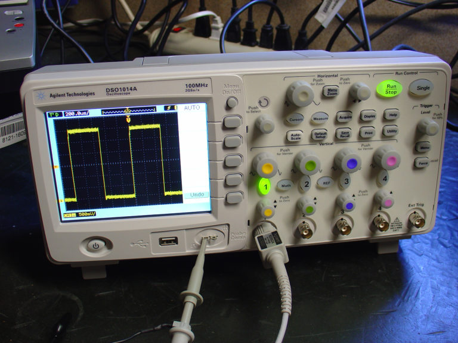
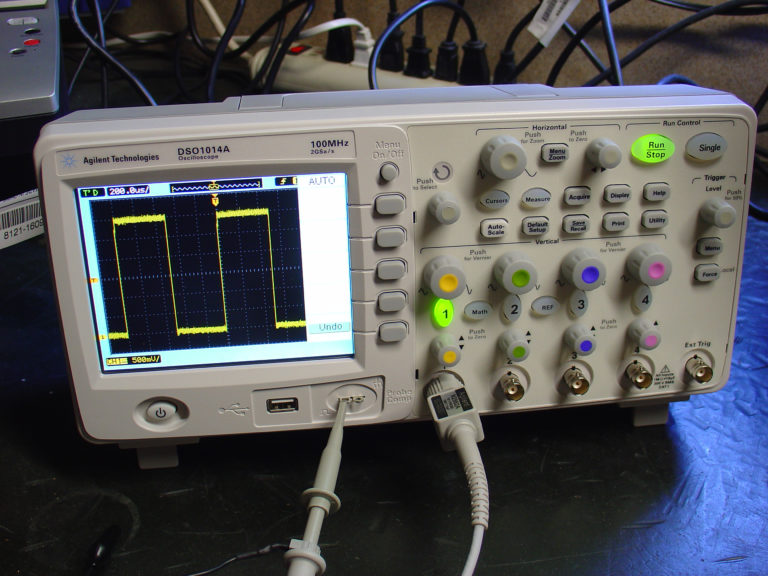

PROPULSION
Excepteur officia do ipsum consequat labore minim reprehenderit in Lorem esse dolor minim exercitation voluptate. Magna ad Lorem pariatur irure laborum ad culpa sunt aliqua deserunt deserunt ut aliqua. Ea reprehenderit ullamco nostrud culpa eiusmod mollit minim dolor proident commodo minim. Cupidatat id occaecat proident irure elit Lorem non aliqua eu. Qui Lorem cillum esse do magna sit magna aliqua anim tempor exercitation voluptate. Sint cupidatat adipisicing laborum in.
- Mode A
- Mode B
- Mode C
- Mode D
| Wales 1a | |||
| Cruise Plant | 4 * PR32 Diesel Engines | Shaft x Blade | 2 * 4 (GRR) |
| Boost Plant | 4 DEW Alpha Batteries | Range | N/A |
| Max Speed | 17 kts | ||
| Reduction Ratio | 412.8:1 | Av TPK | ~14 |
| ERPM | 400-1400 | Max SRPM | 1600 |
 
 Figure 1:
oscilloscope view Figure 2: other oscilloscope
view Figure 3: extra oscilloscope view
Figure 1:
oscilloscope view Figure 2: other oscilloscope
view Figure 3: extra oscilloscope view
1. Electrical modulation noise is typically a function of generator frequency and load
Section Break
2. Air filtration noise is typically a function of generator frequency and load
Figure 4: new oscilloscope view
3. Pneumatic modulation noise is typically a function of generator frequency and load
4. Hydraulic modulation noise is typically a function of generator frequency and load
HYDROGEN FUEL CELL TECHNOLOGY
5. Hydrogen noise is typically a function of generator frequency and load
6. Fuel Cell modulation noise is typically a function of generator frequency and load